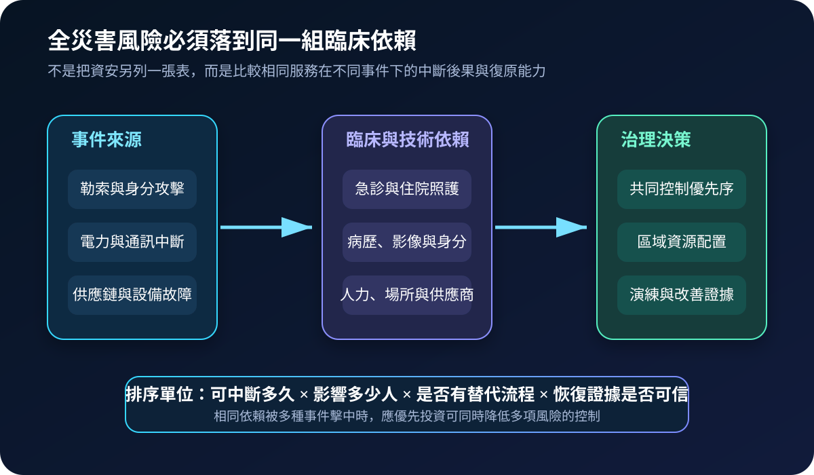
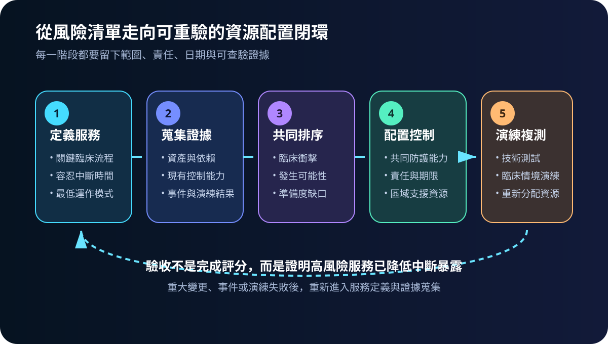
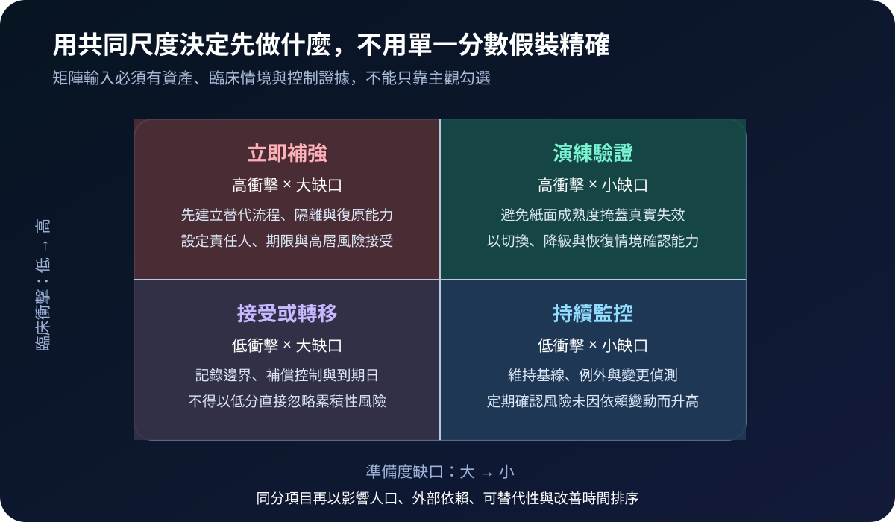

醫療資安國際觀察 · 2026-10-13
醫療資安風險如何納入全災害排序：從單院評估到區域資源配置
作者：Dr. William｜醫療資訊與資安治理實務工作者
醫院面對勒索、停電、通訊中斷與供應鏈故障時，真正共用的是臨床服務、人力與技術依賴；分開評分容易造成重複投資或漏掉共同單點失效。
名詞解釋：全災害評估與風險組合
全災害評估是以服務中斷後果為核心，同時比較自然、人為、技術與資安事件。風險組合則把多項風險放入共同尺度，依臨床衝擊、發生可能性、現有準備度、替代能力及改善成本排序。目的不是產生一個漂亮分數，而是決定控制、演練與區域支援先投入哪裡。
國際現況與適用邊界
美國 ASPR 於 2026 年為 RISC 2.0 增加資安模組，可獨立使用或納入既有風險評估，並保留跨機構彙整與比較功能；其題項以 NIST CSF 2.0 與 HHS 醫療資安績效目標為衡量基礎。NIST CSF 2.0 將治理納入核心功能；2025 年 SP 1331 初版草案另說明新興資安風險應與企業風險管理整合。這些資料提供的是美國工具與通用框架，不是台灣醫療機構的法定評分表。
台灣適用原則：可借用共同尺度、證據欄位與改善閉環，但評估範圍、通報、個資、醫療品質及區域協調仍須依台灣法令、主管機關要求與院內權責辦理。
規劃：先用臨床服務定義範圍
範圍應從急診、住院、檢驗、藥事、影像與轉診等服務開始，記錄可容忍中斷時間、最低運作模式、關鍵人力、資訊系統、場所、通訊及外部供應商。角色至少涵蓋臨床、護理、醫工、資訊、資安、總務、採購與緊急應變。驗收指標可包含高衝擊服務覆蓋率、共同依賴辨識率、改善項目逾期率、替代流程演練成功率及恢復時間達標率。
實作：五階段風險配置閉環
- 定義服務：確認中斷後果與最低安全運作條件。
- 蒐集證據：整合資產、事件、演練、供應商及現有控制資料。
- 共同排序：以臨床衝擊、準備度缺口與可替代性比較不同風險。
- 配置控制：優先補強可同時降低多項事件衝擊的身分、通訊、備援及降級能力。
- 演練複測：以技術測試與臨床情境確認結果，重大變更後重新排序。

風險：分數可能掩蓋共同依賴與證據落差
常見失敗包括各部門使用不同尺度、把低機率高衝擊事件排除、只看技術漏洞不看臨床後果、成熟度自評缺乏演練證據，以及區域資源被多家機構同時假設可用。控制方式包括建立共同定義、保留原始證據與日期、標記外部依賴容量、由跨部門覆核風險接受，並以失敗情境重驗。

可執行清單
- 每項風險是否對應明確的臨床服務與容忍中斷時間？
- 資安、基礎設施及供應鏈風險是否使用可比較的衝擊尺度？
- 共同依賴是否標記備援、替代流程與外部容量限制？
- 排序結果是否連到責任人、期限、預算與風險接受層級？
- 高衝擊服務是否有技術測試及跨部門情境演練證據？
- 事件、重大變更或演練失敗後是否重新排序？
來源
- HHS ASPR｜Cybersecurity Module | RISC 2.0（更新：2026；查閱：2026-10-13）
- NIST｜SP 1331 Initial Public Draft: Quick-Start Guide for Using CSF 2.0 to Improve Management of Emerging Cybersecurity Risks（發布：2025-08-21；文件狀態：初版草案；查閱：2026-10-13）
- NIST｜The NIST Cybersecurity Framework 2.0（發布：2024-02-26；查閱：2026-10-13）
內容說明
本文依健康台灣深耕計畫相關治理內容整理，並參考 HHS ASPR 與 NIST 公開資料，提出醫療全災害與資安風險共同排序框架；不把美國工具視為台灣法定義務，也不取代主管機關公告、醫療專業判斷、緊急應變計畫或法律意見。